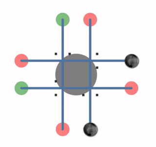

ANR常规分析思路
前面我们已经分析了卡顿检测的工具和他的技术原理。纳闷如果卡顿在严重点，比如直接卡死了，那么就比较严重了，此时系统会弹出系统无响应的提示框。
ANRs 说明
ANR也就是常说的系统无响应，Applicaiotn Not Responding，系统输入5秒得不到响应，或者广波接受者5秒没处理完都会到是ANR。
总结一下，无响应的几个原因如下：
- 在主线程上执行速度慢的IO操作
- 在主线程执行长时间计算
- 主线程执行同步的binder跨进程操作，但是另一个进程长时间没有返回结果
- 主线程由于等待同步锁二被阻塞
- 主线程陷入死锁状态，死锁的定义可以茶语维基百科Deadlock
ANR最终都是主线程得不到及时响应，根据不同形成原因修复和排查ANR也是有一定套路的。
暴露或者检测ANR可以使用StrictMode, 开始后台ANR显示。排查ANR则可以通过TraceView，和ANR发生之后的日志文件。
日志文件一般放在/data/anr下面, 一般文件是tarces.txt，或者anr_开头，具体可以根据时间设备查看：
adb root
adb shell ls /data/anr
adb pull /data/anr/<filename>
定位慢代码
在开发测试期间如果能够复现ANR现象，可以想办法进一步定位慢代码的位置，比如通过TraceView分析； 下面是一个示例：
@Override
public void onClick(View view) {
// This task runs on the main thread.
Capturer.snaptshot(view);
}
// TODO traceview日志
同步锁阻塞
如果主线程视图持有一个已经被其他线程持有的锁，那么主线程会进度被阻塞，知道获取了同步锁。同步锁阻塞也是一个比较常见的ANR原因。
@Override
public void onClick(View v) {
// The worker thread holds a lock on lockedResource
new LockTask().execute(data);
synchronized (lockedResource) {
// The main thread requires lockedResource here
// but it has to wait until LockTask finishes using it.
}
}
public class LockTask extends AsyncTask<Integer[], Integer, Long> {
@Override
protected Long doInBackground(Integer[]... params) {
synchronized (lockedResource) {
// This is a long-running operation, which makes
// the lock last for a long time
BubbleSort.sort(params[0]);
}
}
}
除了同步锁导致的阻塞，还有一种是死锁导致的ANR，排查手段都是类似，通过查找具体的锁对象和持有的线程id可以分析出有竞争的线程。
